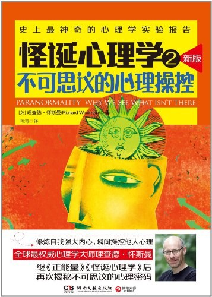

 |
怪诞心理学2：不可思议的心理操控 |
序言 是心理幻觉，还是世界的本来面目
有一期的节目格外有意思，节目播放了一只名叫贾汀的小猎犬的短片。短片中，贾汀看上去具有超凡的预知能力，能够预测自己主人帕姆回家的时间。帕姆和父母住在一起，家里人注意到，如果女儿那天会回家，贾汀肯定会一直坐在窗台上，直到女儿回来，所以每次贾汀坐到了窗台上，就意味着女儿那天肯定会回家。某份全国性报纸报道过贾汀的这种本领，奥地利的一家电视公司还专门为贾汀设计了一个实验。实验在保罗·麦肯纳的节目中播出，一组摄制人员跟随帕姆在市中心活动，另一组摄制人员则在帕姆的父母家里跟踪拍摄贾汀。摄影画面显示，当帕姆决定回家的时候，贾汀果真会跳上窗台发呆，一直等到主人到家才下来。之后，帕姆、贾汀和我都参与了节目中的访谈，当我表示对贾汀很好奇之后，帕姆邀请我对贾汀进行一次更正规的检测，看看她的狗是不是真能通灵。接下来的好几个月，助手马修·史密斯和我驱车前往英格兰西北部的拉姆斯博顿，在那里对贾汀展开了测试。大家见面后一切顺利，帕姆非常友善，马修和我都很喜欢贾汀，贾汀似乎也很喜欢我们。
在第一次实验中，马修和帕姆驱车到8英里之外的一个酒吧。一到目的地，他们就随机挑了一个数字作为回程的时间。与此同时，我一直在拍摄贾汀最喜欢的那个窗户，完整地记录贾汀在那里的情况。帕姆和马修离开酒吧回家之后，我们回放拍摄的影片。很有意思，这只小猎犬看上去果然通灵，一到帕姆和马修设定好的回家时间，它就待在了窗台上。一切看上去都没有什么疑问。然而，当我们仔细查看影片的其他部分时，却发现贾汀的行为值得深究。我们发现贾汀好像迷上了窗户，整个实验期间先后跳上窗台13次。第二天我们进行了第二次实验，结果显示贾汀跳上窗台的次数为12次。似乎贾汀待在窗台上这一行为并不像奥地利电视节目说的那样，是主人回家的明显信号。帕姆解释说可能是因为做实验的时间不对，夏天做实验，对贾汀的干扰很多，比如当地的母狗正在发情，还经常有鱼贩子经过，等等。
1967年，威斯康星州立大学夫妻档心理学家洛伦·查普曼和简·查普曼做了一个经典的实验。这个实验主要是考察一个心理疾病的诊断模式，被称为“画人测试”，在20世纪60年代非常流行。当时的临床医生认为，通过画人可以检测出画者的精神疾病，比如偏执狂、性压抑、抑郁症等。然而，查普曼夫妇对此感到怀疑。例如，临床医生认为患有偏执狂的人往往会画出大眼睛，查普曼夫妇则认为这不过是当时人们的一种固有思维罢了，根本就没有科学依据。查普曼夫妇怀疑临床医生使用的诊断模式事实上和一般人心中的想法无异。为了证实这种想法，他们让一组学生查看精神科病人画的人像，并要他们推测并简述画者的疾病症状，比如偏执狂、“担心自己缺乏男子气概”“怀疑是阳痿”等。实验人员问这些学生有没有发现什么规律。有趣的是，这些学生说出的判断模式就是精神科专业医生使用了多年的诊断模式，偏执狂会画出超大的眼睛，担心自己没有男子气概的人会画出宽阔的肩膀，生殖器较小的人在画中不会突出生殖器等。
事实上，查普曼夫妇是随机配的人像图画，人像图画和症状之间不可能有什么模式可循，可是实验的参与者们看到了根本不存在的诊断模式。查普曼夫妇的研究完全颠覆了“画人测试”，同时还揭示了人类很重要的一个心理现象：人们的想法不是被动地存放在大脑里等候外界信息给予肯定或否认；相反，是这些想法影响了人们怎样去看待一件事物，尤其是当某种巧合出现时。人们乐于关注巧合的事情，如果这个巧合事件正好和他们的观点相符，人们就会关注很多。在查普曼夫妇的实验中，参与者们已经认定了偏执狂画出的眼睛会比较大，所以就特别关注画出大眼睛的人到底是不是偏执狂，忽视了画出大小正常的眼睛的人也可能是偏执狂。
同样的心理也发生在当人们生病的时候。几千年来，人们确信只要碰上一定程度的气温、气压和湿度的变化，他们的关节炎就会发作。20世纪90年代中期，研究者唐纳德·雷德梅尔和阿莫斯·特维斯基为了探究关节疼痛与天气状况之间的潜在关系，将一些风湿性关节炎患者（所有患者都相信疼痛与天气有关）组织起来，在一年多的时间里，让他们每月两次评价自己的疼痛程度。雷德梅尔与特维斯基还密切留意当地同期的气温、气压和湿度的信息。然而，数据显示，患者的身体状况与天气毫无关联，他们将注意力集中在坏天气作祟下的极度疼痛，并错误地认定二者一定相关，却忽略了其他情况下的疼痛。
第一章 成为你自己的预言家
D先生此前对丽莎一无所知。他先让她伸出右手，掌心向上，再用放大镜认真地察看她手掌心的每一条纹路。接着D先生开始描述她的个性。丽莎听后，点头微笑。又过了一会儿，D先生让她洗一叠塔罗牌，说完把牌放在桌子中间。D先生一张接一张地将塔罗牌翻转过来，然后一张一张解释。大约过了3分钟，他告诉丽莎，她有一个哥哥，并详细地描述了他的职业生涯。又过了几分钟，D先生说，丽莎最近和爱人的关系破裂了。
悬赏100万美元去发现超自然能力
作为一个魔术师，兰迪从未放弃过揭露灵异诈骗现象，而人们对他的调查研究褒贬不一。1996年，他成立了詹姆斯·兰迪教育基金会，其网站打着“拥有大量灵异、伪科学、超自然的学习资源”的旗号不断发展，并向那些自称通灵师和宣称拥有超自然力量的人提出大胆挑战，确切地说，是100万美元的挑战！
2008年，英国有家媒体推荐了一个名叫帕特里夏·帕特的女人，向兰迪的百万美元发起挑战。其理由是他们相信，帕特里夏·帕特能够与他们已逝的亲人、朋友聊天并获取他们的生活信息。兰迪邀请我和伦敦大学金史密斯学院的心理学教授克里斯·法兰奇，一同前去测试她的超能力。
见证真伪的大日子终于来了！这些志愿者被安排在这一天不同的时间来到法兰奇的实验室与帕特会面。为了避免帕特根据志愿者的衣着和神情获取相关的信息，法兰奇还取下了志愿者佩戴的所有珠宝首饰，他们穿一身从头到脚的黑色长袍、戴一顶黑色斗篷进去。
当帕特为十个志愿者都做了通灵沟通后，所有的志愿者被带回测试间，然后我们发给他们帕特所做的十份记录，并要他们在这十份描述里挑出和自己相符的那一份。如果帕特真具有与死者对话的能力，那么志愿者应该很轻松就能挑出描述自己的那一份。举个例子来说，一个志愿者在乡下长大，又在法国旅居了很长一段时间，并在最近和一个男演员结了婚，那么此人一眼就能看出哪一份记录描述的是自己。如果帕特果真这么神，那么在她的记录里应该会提到一个被绿色包围的童年、布里饼的特别气味，或者类似这样的话语：“亲爱的，这真是一次伟大的胜利。”这个志愿者只要瞥一眼这样的描述，她就会立即对号入座。我们对帕特设定的考核标准是，有五个或五个以上的志愿者挑出和自己相符的描述就判她获胜。
这时，每个志愿者都仔细阅读了帕特的记录，并从中挑出了属于自己的那一份。与此同时，我们都聚集到了法兰奇的办公室，准备检查测试结果。经过检查我们发现，1号志愿者挑了本应属于7号志愿者的描述，2号志愿者挑了属于6号志愿者的记录，接下来每一份都是如此，完全错位了，没有一个志愿者准确挑选了属于自己的记录。这个结果让帕特惊呆了，她扬言要改进方法后再回来证明给我们看。
通灵术，一项微妙的心理技艺
第一个心理技巧
“乌比冈湖效应”：人们对于自身的性格和能力抱有不切实际的乐观态度。
大多数时候，你的决策建立在理性的基础上，然而，在某些特定的情况下，你的大脑会开一下小差，让你失去理智。心理学家发现，产生非理性的一个重要原因源自一个奇特的现象，称为“自我本位偏见”。我们都有一个脆弱的自我，它会用不同的手段来保护自己不被外面残酷的现实所侵害。我们将成功归功于自己，将失败怪罪于他人。我们欺骗自己，夸赞自己举世无双，比一般人都要能干，而且将来还能发大财。这些自我意识听上去可能有些夸张，但有一个著名的例子可以给我们做出诠释，那就是研究每对夫妻，估算他们干的家务活的比例，结果每对夫妻估算的比例相加都会大于100%。如果每个人都专注于自己所干的家务活，同时忽视伴侣所干的活儿，那么就会表现自我本位偏见。
第二个心理技巧
“达特茅斯印第安人队与普林斯顿老虎队效应”：人们往往只看到他们想看到的。
1951年，美国大学生足球赛，达特茅斯印第安人队对阵普林斯顿老虎队。这是一场非常粗暴的比赛。在整场比赛中，普林斯顿一个队员的鼻子断了，达特茅斯队一个队员的腿断了。然而，两所大学的报纸对这场比赛的评述截然不同。达特茅斯校报认为是普林斯顿的队员在搞鬼，而普林斯顿大学的记者则认为达特茅斯队应对此负主要责任。这是媒体的偏见吗？出于好奇，社会心理学家阿尔伯特·哈斯托弗和哈德利·坎特里尔分别找到了观看这场比赛的两个大学的学生，并询问他们现场的状况。采访结果显示，尽管他们看的是同一场比赛，可这两组学生由于关注点不一样，比赛的观感也大相径庭。比如，当被问到是不是达特茅斯队的队员抢先动粗时，36%的达特茅斯大学学生选择“是”，而86%的普林斯顿大学学生选择“是”；同样，只有8%的达特茅斯大学学生认为自己的球队没有必要动粗，而35%的普林斯顿大学学生认为达特茅斯队的队员完全没有必要动粗。不单是一场比赛，研究者们还在很多场合发现这种“选择性记忆”的现象：当信念很强的人被问及争议性话题时，他们往往只看到他们想看到的。
这种“达特茅斯印第安人队与普林斯顿老虎队效应”也有助于解释丽莎通灵阅读的成功。当D先生第一次察看她的手掌时，他从多个角度描述了丽莎的性格，其中很多描述都具有两面性。比如他告诉丽莎说，丽莎是个很敏感的人，同时也非常脚踏实地；又说丽莎在别人眼里可能有点儿害羞，但其实她是敢于直言的人。同样的道理，达特茅斯印第安人队队员与普林斯顿老虎队队员只记得那些他们早已先入为主的比赛画面，丽莎也是有选择地听取了D先生对她性格的描述。换句话说，她只听到她想听到的，而那些不正确的描述，她就当没听到。
第三个心理技巧
“福克斯博士效应”：人们善于在一个毫无意义的形状中看出含义。
所有这些都说明了人类感知系统的一个基本怪癖。只要在合适的背景下，人们就善于从一个毫无意义的形状中不知不觉地看出含义来。同样的原则也可以帮助解释人们为何可以从罗尔沙赫氏心理测试的墨迹中，从云彩和烤松饼中看出各种不同的图案。你可以试试，随便盯着一个什么形状的图形看，只要时间允许，你的眼里就会出现一些物体、脸和数字等。
在我们日常的对话中，也会出现这种情况。当你与人交谈时，你们彼此都想要将自己的观点尽可能地传达给对方。你的某些言论或许模棱两可，但是，人类的大脑非常善于将对话内容加以推断。然而，当这个重要的过程高速运转时，你就会臆想出原本不存在的意思。
20世纪70年代，南加利福尼亚大学的唐纳德·纳夫图林和他的同事以令人惊叹的方式验证了这个技巧的威力。纳夫图林以数学与人类行为之间的关系为主题，写了一份可以称为天书的报告。此外，他还特意安排了一个演员在一个教育论坛上用这份毫无意义的报告做了一次演讲，然后询问台下作为听众的精神科医生、心理学家、社会工作者，问他们觉得这个演讲怎么样。在演讲之前，纳夫图林还特意给演员做了培训，让他排练台词，并认真教他如何应付演讲结束后长达30分钟的提问时间；再比如，教他用双面陈述、新的专业术语，甚至自相矛盾等技巧来回答听众的提问。在演讲开始之前，纳夫图林介绍了这位演员，并把他说成是迈伦·福克斯博士，还帮他杜撰了一个令人印象深刻的简历。在接下来的一个半小时里，听众完全被这个演员看似深奥、实则毫无意义且自相矛盾的演讲给征服了。当演讲结束后，纳夫图林给每个人发了一份调查问卷，收集反馈信息。
就像你刚看到的，人们可以将一个原本没有意义的符号理解成字母“B”和数字“13”，听众从假福克斯博士的胡话中听出了伟大的智慧言论。根据听众的反馈意见，绝大部分听众认为福克斯博士的演讲条理清晰，分析到位，非常棒。85%的听众表示，学识渊博的福克斯博士的演讲组织材料的逻辑性非常强，70%的听众称赞他用的例子，95%的听众认为他的讲话非常具有启发性。
尽管伊莉莎和体验者说的都是一些没有什么意义的话，然而，伊莉莎被证实非常受欢迎，原因是许多人相信，和他们聊天的对象是一个真正有经验的心理治疗师，而不是一个电脑程序。
政治家们也深谙这个技巧，常常向大众发表模糊的、模棱两可的甚至前后矛盾的言论，因为他们知道选民们会挑自己喜欢的话去听。比如，“我们必须做好准备吸取前车之鉴，鼓足勇气迈向未来；保障工人与组织机构的权益；鼓励公民自力更生，并加以扶持，但不倡导公民依赖国家救济”。就连学术界也不能幸免。在20世纪90年代中期，纽约大学物理学家阿兰·索卡尔认为，在诸多后现代文化研究领域，充斥着大量冗长难解的文章。为了检验自己的理论，他向某学术期刊投了一篇题为《越轨：量子引力新解》的毫无意义的文章，堆砌了许多不相关的参考资料、随意的引证，简直是一派胡言。例如，文章中有一部分内容论证了量子引力有政治含义：“迄今为止，还没有如此具备解放性的数学存在，我们只能推测其最终含义。我们能够在模糊不清的系统理论多维非线性逻辑中发现端倪。但是，这种方法仍然带有深刻的后资本主义生产关系危机根源的印记。”该期刊的编辑们未能识破这场闹剧，最终发表了这篇文章。
同样的情形也发生在通灵阅读中。通灵师们的大部分说辞都是含糊不清的，可以有多种解释。比如，当通灵师提到，你在房产方面变迁很大，那么可以理解为：搬家，帮别人搬家，继承了房产，新租了房子，甚至是购买了假日别墅。因为这句话完全没有提到时间，这一变化可能发生在过去，也可能正在发生。客户努力在这句话中寻求与自己相符的含义，他们回顾自己迄今为止的生命历程，并设法找到相匹配的任何事物。这样，他们就会说服自己，灵媒果然灵验，这一趟没有来错。通灵师们一般在通灵阅读开始前就告诉客户，他们不可能提供非常精确的信息，因为整个过程既有点儿像雾里看花，又有点儿像在黑暗中倾听某个声音。然而，填补信息的空隙则是客户自己的事情，就像福克斯博士和伊莉莎所做的一样，他们说的都是一些毫无意义的话，听者却将这些胡言乱语理解为闪耀着智慧光芒的真知灼见。研究员杰弗里·迪恩将这一现象描述为“强求一致效应”，其含义取自希腊神话，神话中的某个人物将客人的四肢切断，以确保客人正好能够躺在他的床上。
第四个心理技巧
“鱼和叉效应”：只在起作用的“钩子”上做文章。
灵媒将这种简单的东西发挥到了极致。在进行通灵阅读时，通灵师或灵媒通常会向你提几个不同的话题，看哪一个话题对你起作用。就像一个优秀的政治家或二手车销售商一样，他们不会表达出心里的真实想法，而是试探性地根据他们收到的反馈来改变他们的话语。这种反馈有许多种不同的形式，他们会留意你是否点头、微笑、在座位上身体前倾或是突然变得很紧张（这是看手相的算命先生热衷于抓着你的手的原因之一），然后见风使舵。这就是“鱼和叉效应”。D先生是此间行家。
人们往往喜欢征询通灵师许多潜在的意见，比如他们的健康、人际关系、旅行计划、职业以及资产情况。D先生曾通过塔罗牌，提到以上话题并暗中观察丽莎的反应。当D先生提到她可能有一些疼痛和痛苦时，她并没有真正响应；当提到她的事业问题时，也没有得到她太多回应；当提到旅行时，丽莎更是无动于衷。最后，他提到了丽莎的情感生活，就在那一刻，丽莎整个神情都变了，整个人都显得很沉重，D先生马上就知道了她关心的是什么事，并开始深度挖掘。他看着丽莎手掌上的纹路，脑海中灵光闪现，说他不能肯定它是否反映她某个家庭成员的死亡或是一段破碎的关系，当提到死亡时丽莎完全没有反应，但当他提到破碎的关系时，她很快地点点头，D先生不露痕迹地记住了她的响应，继续为丽莎做通灵阅读。大约十几分钟过后，他拾起另一张塔罗牌，满怀信心地宣布，这张塔罗牌表明她最近和爱人的关系破裂了，丽莎霎时惊呆了。
第五个心理技巧
独特性错觉：每个人都认为自己独一无二。
第六个心理技巧
把心理柠檬变成柠檬水：用喻意对具体话语进行开脱。
有的通灵师采取一种给参与者设置难题的方式来自我开脱，比如“让他们好好想想，最好是回去向家人求证一下是不是有这种情况”。还有一种开脱方式是“我只是打一个比方”，很明显，这种方式非常低级。D先生告诉我，他曾经在一个海边的小镇给人算命。有一个叫乔治的男人请他算命。他看着乔治的脸和穿着，已经猜到他大部分时间在户外活动，并很有可能在船上工作。D先生看了看手里的塔罗牌，说他可以看到乔治在一个港口站立着，等待一艘船的抵达，乔治流露出失望的神色，摇摇头。乔治说他一直在农场工作，他不喜欢大海。这是一个巨大的失误。于是很快，D先生解释说，不要仅从字面上来理解他的话，他说的只是一个比喻，他说船表示乔治的人生新方向，而乔治对他人生的改变感到紧张。乔治的脸立刻亮了起来，说，是的，他最近结婚了，希望能顺利与另一半分享人生。果不其然，通灵柠檬在眨眼之间变成了柠檬水。